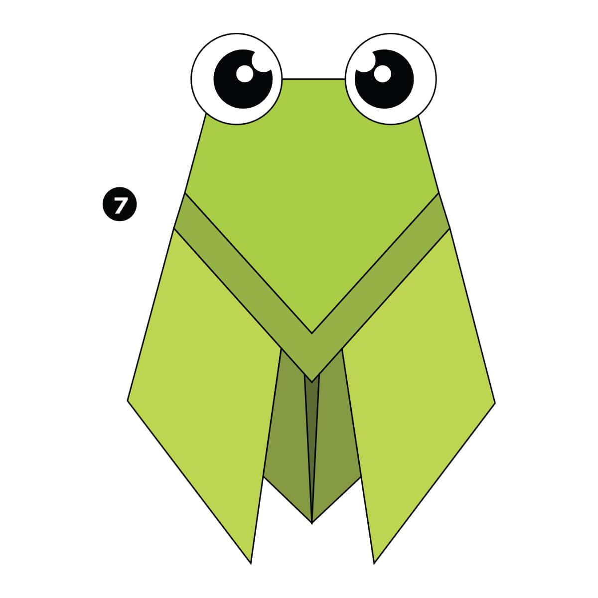

intresting facts about camel
- camel ears are furry
- camel can move easily on sand because of their specially designed feet
- when they find water they will drink as mush as possible

intresting facts about pigeon
- pegions are incridble complex and intelligent animals
- pegions are reonwed for their out standing navigational ablitiles
- pigeons have excellent hearing ability

intresting facts about teddy
- teddy bears are soo sofft
- many people treat teddy bear as a pet

intresting facts about panda
- teddy bears are soo sofft
- many people treat teddy bear as a pet

intresting facts about cicada
- They’re true bugs. So you can call them a bug and be scientifically accurate.
- Most have red-orange eyes. But occasionally cicadas have blue, white or grayish eyes. Keep on the lookout.
- They improve lawns by digging tunnels that allow air into the soil. When they die, their rotting bodies put nitrogen into the soil.

intresting facts about chameleon
- chameleons are the reptiles that are part of iguna suborder
- changing skin is an important communication among chamelon
- most chameleons prehensilen tail that they use to wrap around tree branches